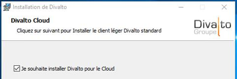
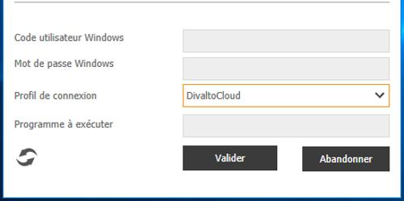

Accueil | Divalto SAAS | Installation d’un client léger Wpf pour le cloud
L’installateur du client léger Wpf propose une option d’installation en mode Cloud.

Ceci a pour effet de créer automatiquement un profil de connexion permettant de se connecter aux serveurs d’applications du Cloud Divalto.
C'est ce profil de connexion qu’il faudra choisir dans les options avancées de la boite de connexion :

Remarque : Ce client léger n’est pas une version spécifique au cloud, il est universel et permet également de se connecter à un serveur qui n’est pas dans le Cloud Divalto simplement en changeant de profil de connexion.